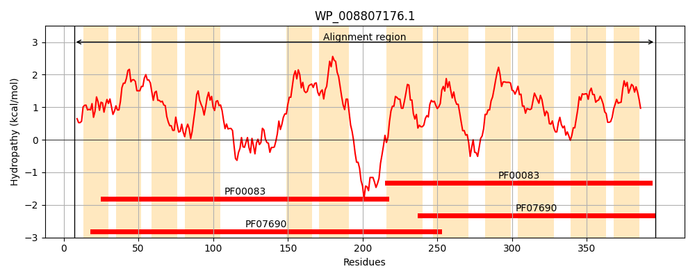
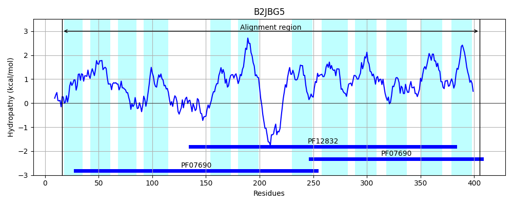
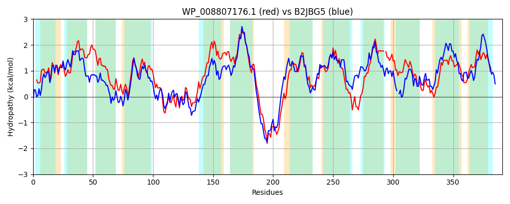

Hit Accession: B2JBG5
Hit TCID: 2.A.1.59.2
Hit Description: gnl|BL_ORD_ID|1721 gnl|TC-DB|B2JBG5|2.A.1.59.2 Major facilitator superfamily MFS_1 OS=Nostoc punctiforme (strain ATCC 29133 / PCC 73102) GN=Npun_BF137 PE=4 SV=1
Mach Len: 391
e:0.000000
Query TMS Count : 12
Hit TMS Count: 12
TMS-Overlap Score: 11.350000
Predicted Substrates:None
BLAST Alignment:
Score: 959 , Bit scores: 374 bits, E-value: 7.1e-128, Alignment length: 391, Percentage identity: 50
Query: 7 TLGRIPKGVWVLGGVSLLMDVSSEMIHSLLPLFMATTLGASVIIIGLIEGLAEATALILKVFSGVISDYVGKRKGLALLGYGLGALSKPLFAIAPTAGVVFSARMIDRVGKGIRGAPRDALVADVTPPEIRGAAYGLRQALDTVGAFLGPLLAVLLMFIWANDFHAIFWVAVIPAVLSILLLGFGLQEPKSAIAHKRSNPLKRENLKKLSAAYWWVVAIGSIFTLARFSEAFLVLRAQQMEIPLFTIPLVMVAMNLVYSLTAYPFGKLSDSMSHSKLLQWGLLVLILADIVLA-LSGHWSTLLLGVALWGIHMGMTQGLLAAMVAHTAPPELRGTAFGMFNLMSGLALLLASTGAGVLWETFGAASTFYAGAIICMVTLIGMRVMPSAYRQ 396
T IP+ VWVLG VSLL D+SSEMIHS+LPLF+ + LGA ++ +G IEG+AE+TA + KVFSG +SDY+G+RK LA+ GYGL L KPLFA+A + G V AR DRVGKGIR APRDA+VADVT RGAAYGLRQ+LDT+GAF GPL+A +LM +F +FW+AV+P +L++ LL G++EP + + +++NPL+ L+ L +YW +VA+ +F L S+AFL+L+AQQ I +PL +V MN+ YSL+AYP G LSD + LL G V LA + A + W L L+G+H GM+QG+L A+VA P LRGTAFG+ NL G+ALL AS G+LW+T +TF AG++ ++ + V R+
Sbjct: 16 TFQTIPRNVWVLGFVSLLTDISSEMIHSVLPLFLVSALGADLLTVGWIEGIAESTASVFKVFSGALSDYLGQRKRLAVAGYGLSTLVKPLFALATSPGWVLMARFGDRVGKGIRVAPRDAIVADVTDSANRGAAYGLRQSLDTIGAFTGPLIAFMLMSFSGQNFRLVFWLAVLPGILAVALLAIGVREPSNINSQRQNNPLQWSALQSLGKSYWVLVAVALLFNLGNSSDAFLLLQAQQAGISASLVPLTLVVMNVAYSLSAYPVGLLSDRIGRLGLLVGGFCVYALAYLGFAFVDAPWQVWGL-FGLYGLHQGMSQGILLALVADRVPSHLRGTAFGLINLAIGVALLPASLLGGILWQTISPKATFIAGSVFAASAIVLLLVFEGGRRK 405 | Protein Hydropathy Plots: |
|---|
|  |  |
Pairwise Alignment-Hydropathy Plot:
|
|---|
|  |